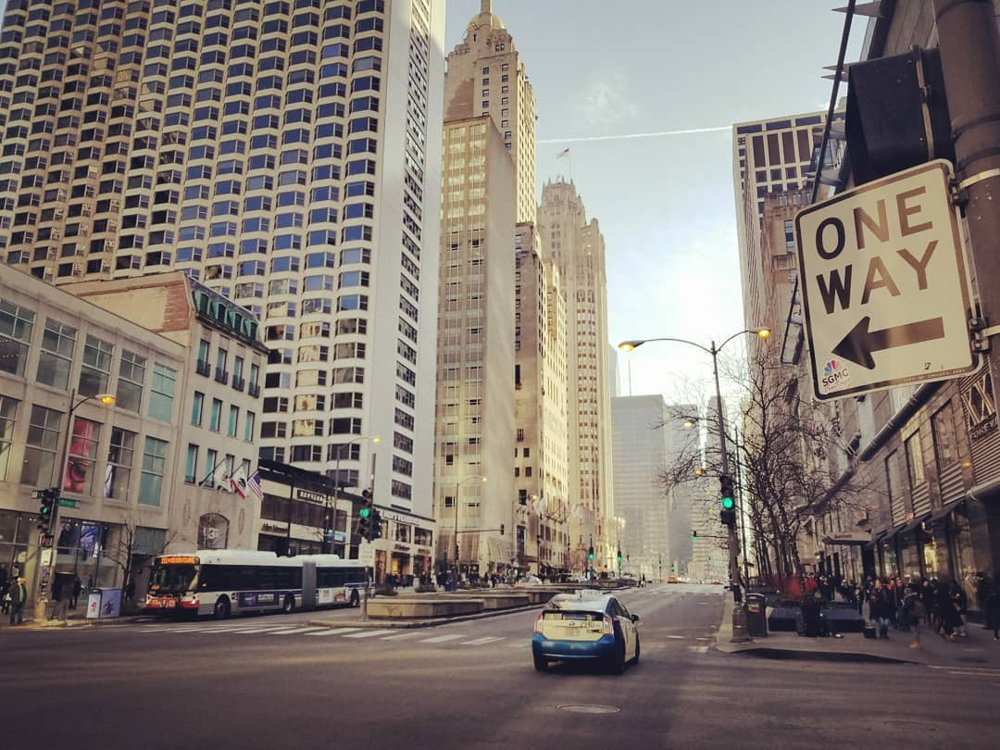
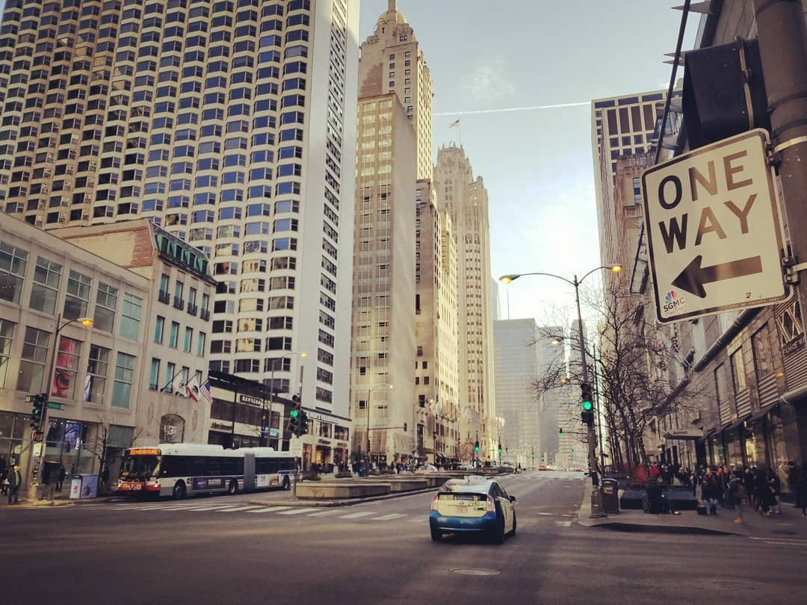
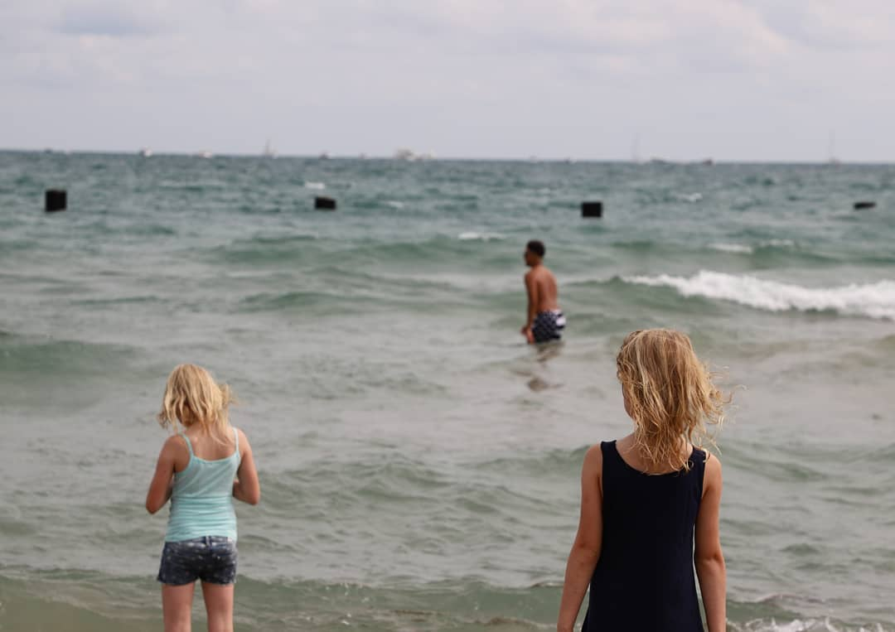
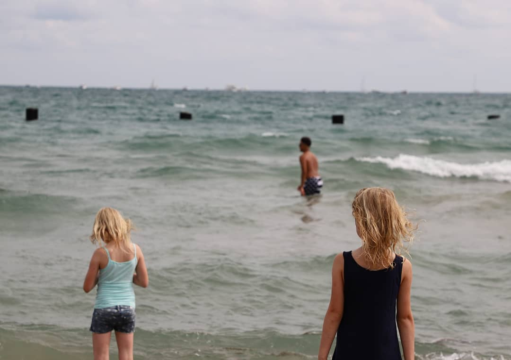
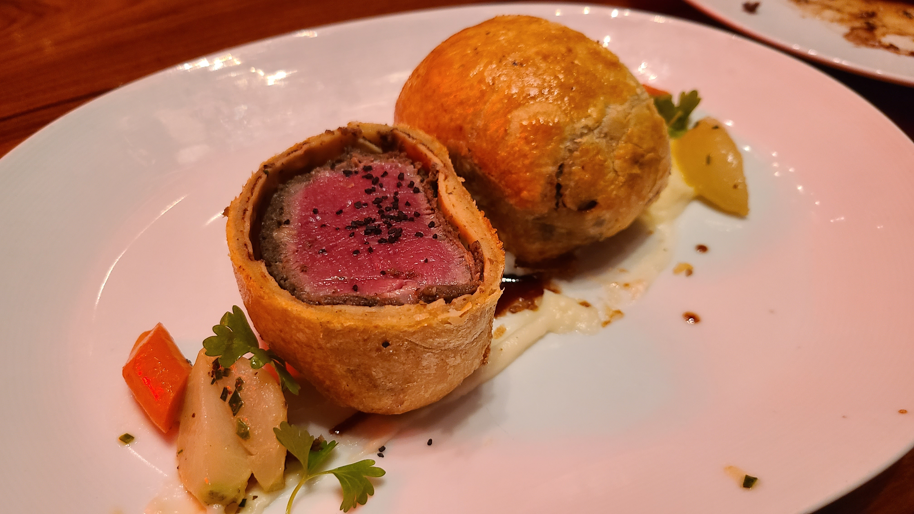
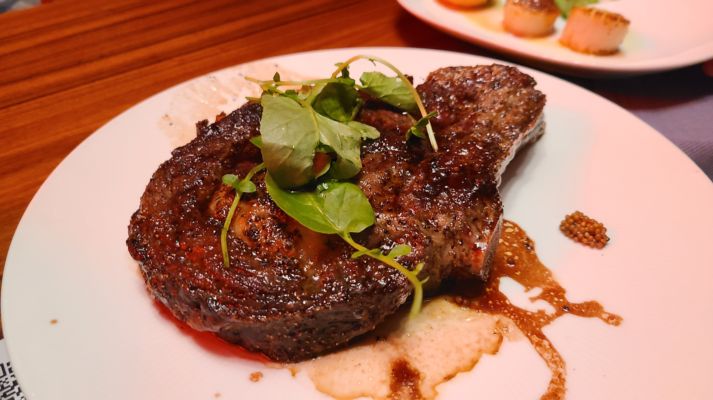
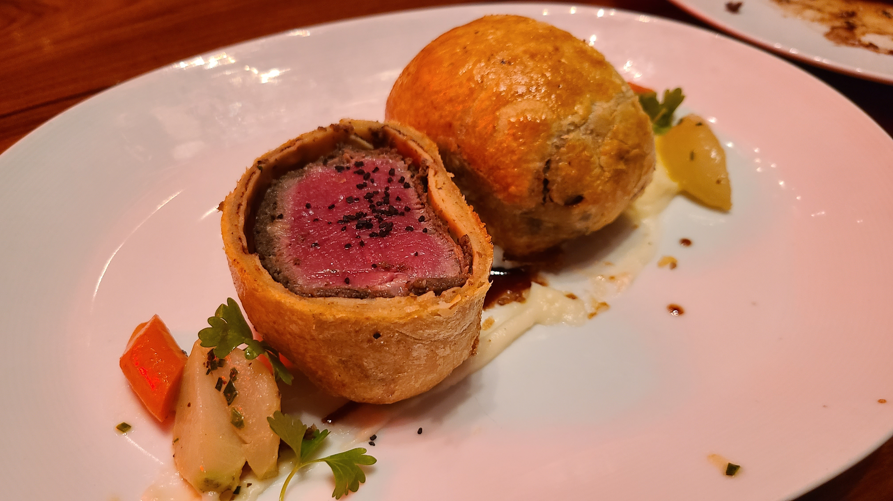
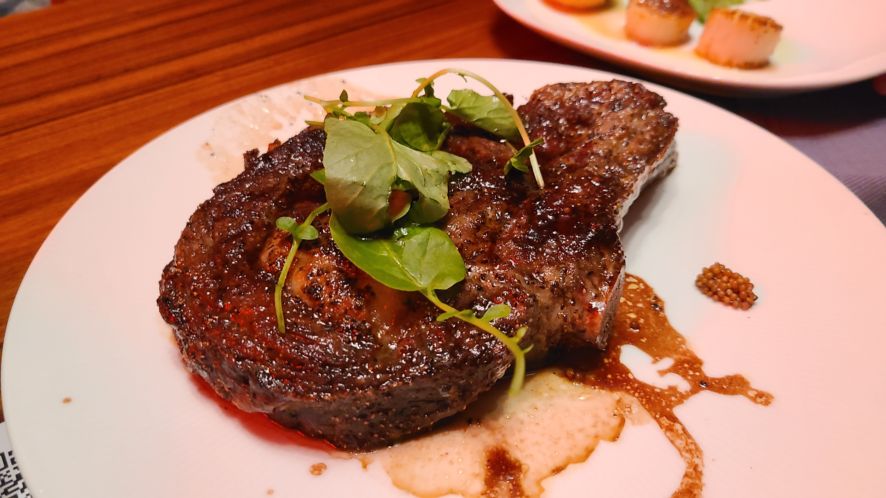

Here I want to share some photos taken while travelling around the world. Some photos may not be displayed at the highest resolution since I can not find the orginal pictures at this time:(
 


 



 





I love listening to the music of all genres, and below is a classical piece from one of my favorite composers Shostakovich. This piano version is arrenged and played by Florian Noack.
The video game Hollow Knight also comes up with some fascinating music. This video is made by Mart0zz.